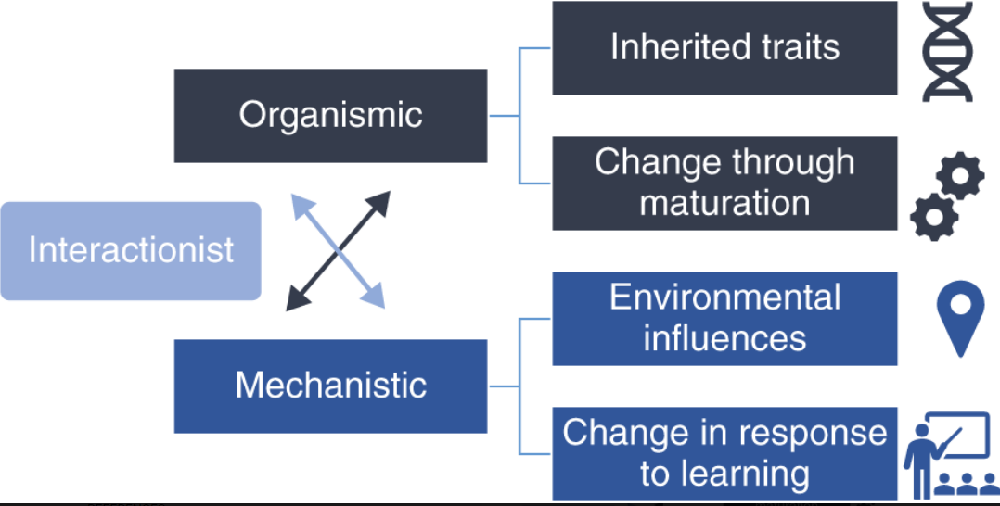
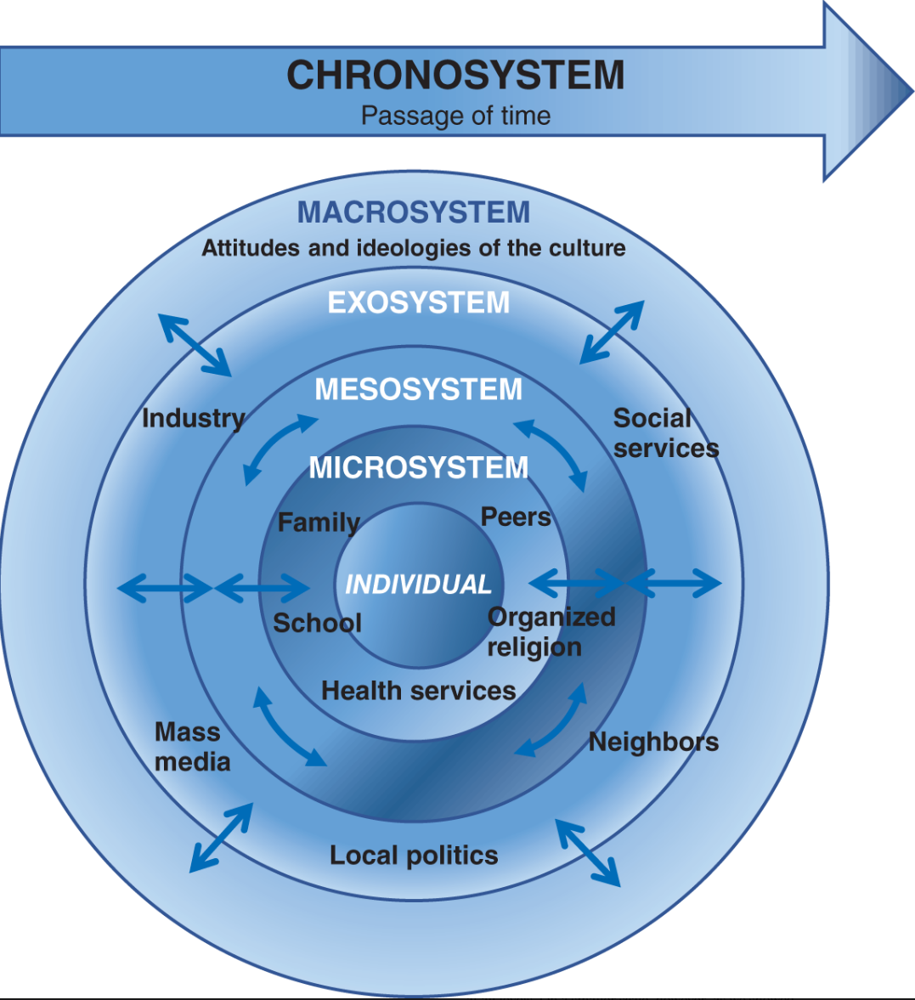

Models of Development: Nature and Nurture in Adulthood
Nature or nurture
It is likely that the most fundamental question in human development is: were we born determine to be like we are right now? Can the environment change what is already programmed in our genome?
As gerontologist, psychologist, sociologist, or educators, we care about the answer to these questions. You might be thinking: Come on! It is obvious that both nature and nurture are connected. But, this is not clear in reality.
We will discuss in this lecture some important theories that are looking to answer elemental questions. I will develop a separate lecture to address genetics.
Developmental science
Whitbourne & Whitbourne (2020) emphasized the distinction between using the word “psychology” and “science” along with the word “development”.
A more integrative approach takes place when we convey a definition where all other sciences can come to the table to discuss aging and human devolopment.
If you Google centers such as the Alzheimer’s Disease Center at UC Davis, you will see a lot of scientist from different fields working to understand healthy aging and pathological aging. We represent only one of the fields.
This is why we need to study more than only behavior, genes, or social forces. As professionals doing research, and interventions with aging adults,we need to study more than we imagine.
Models of individual-environment interactions
Models of individual-environment interactions
In the 20th century, psychology and other fields created theories focusing mostly on nature. They saw human development as something happening at natures pace, it was a more deterministic approach.
John Watson and B.F. Skinner did not like this approach.
They were the foundation fathers of behaviorism.
Behaviorist, pay a lot of attention to the context. In fact, Watson was the first to demonstrate that the environment can modify your development and learning process. After that, Skinner created a vast scientific literature. Skinner changed how we approach learning, and the changes impacted by the environment.
Watson conducted an influential experiment where he conditioned a child to be afraid of rabbits. You may see this video to learn more: CLICK HERE)
Models of individual-environment interactions
Scientist also conduct research with identical twins (monozygotic).
In this studies, we want to study the impact of environment on human development.
For example, we can address the question: How is possible that two identical human beings develop in different directions? Under the same context (same household, hopefully).
You may check this wonderful twins study: CLICK HERE)
Models of individual-environment interactions

Sociocultural Models of Development
Ecological Perspective
This perspective is dominated by Urie Bronfenbrenner
Bronfenbrenner was an influential psychologist who advocated to pay attention to the complexity of the environment.

Let’s jump into something negative
Ageism: “a set of beliefs, attitudes, social institutions, and acts that denigrate individuals or groups based on their chronological age. Similar to other”isms” such as racism and sexism, ageism occurs when an individual is assumed to possess a set of stereotyped traits.” (Whitbourne & Whitbourne, 2020, p. 29)
In fact, Madonna recently claimed that media and general public where criticizing her look because she looks old, she is 65 years old. You may read more on the link below:
Madonna hits back at ageist criticism after Grammy Awards appearance
Written by Leah Dolan, CNN Madonna has spoken out against criticism of her appearance after presenting at the Grammy Awards Sunday night. In her latest Instagram post, the multi-award-winning singer lamented being "caught in the glare of ageism and misogyny that permeates the world we live in," after a close-up photo of her face went viral online and sparked a torrent of negative comments.
Why ageism exist?
- Some possible explanations:
- terror management theory: people regard with panic and dread the thought that their lives will someday come to an end.
- modernization hypothesis: the increasing urbanization and industrialization of Western society is what causes older adults to be devalued. They can no longer produce, so they become irrelevant and even a drain on the younger population.
Psychological models
Piaget’s Cognitive-Developmental Theory
Schemas, assimilation, and acommodation
You may learn more about Piaget’s life by CLICKING HERE. Piaget was a French researcher, he was more interested in epistemology. His interest helped to question: how do we learn? how our cognition changes?
Schemas: the mental structures we use to understand the world.
Assimilation: it refers to the situation in which individuals change their interpretation of reality to fit the schemas they already hold.
Accomodation: it refers to the situation in which individuals change their interpretation of reality to fit the schemas they already hold. In simple words, you are the one who changes. You change your schema.
The aim is to find an equilibrium between these two processes.